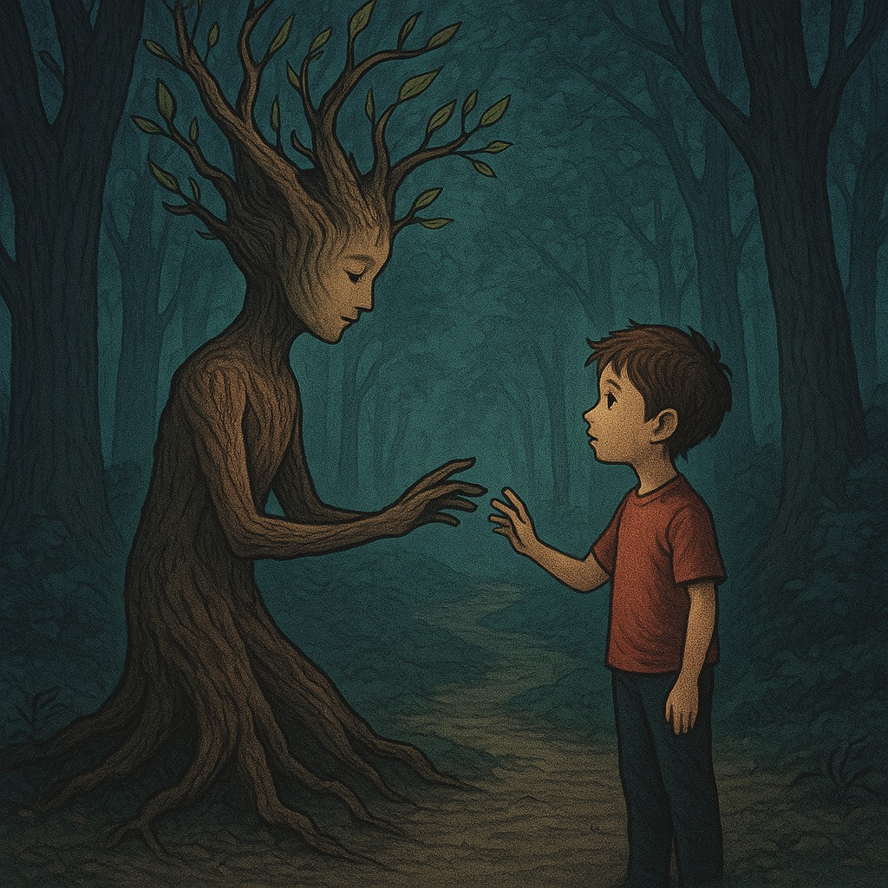
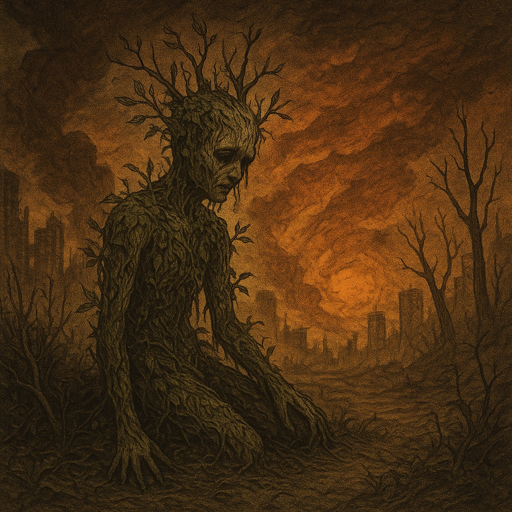

Ep 1: Semilla del Abandono
2025 3 Episodios
+18
Violencia,suspenso
Asher, un niño abandonado y convertido en una planta, lidera la venganza de la naturaleza contra la humanidad. Su destino se enfrenta al de Ossian, el último humano sobreviviente.
Episodios >
Ep1: Semilla del Abandono

Ep2: El Eco de la Furia

Ep3: El Ocaso de la Humanidad